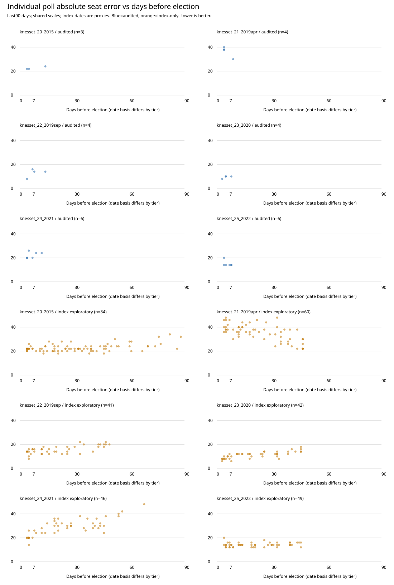

Index statistics are exploratory retained-row summaries, NOT every independently verified poll. Source dates, lineups, missing metadata and syndicated duplicates limit inference. No poll weight or final model adopted. Variance is sample variance of poll total absolute seat errors, not predictive variance.
Summary | Individual polls | All campaign summaries | Creator/horizon patterns | Audited-only quality trial | Chronological tuning | Geographic footprints, descriptive only
| Tier | Election | N | Mean absolute seat error | Sample variance (seats squared) |
|---|---|---|---|---|
| audited_release | knesset_20_2015 | 3 | 22.67 | 1.33 |
| audited_release | knesset_21_2019apr | 4 | 36.50 | 19.67 |
| audited_release | knesset_22_2019sep | 4 | 13.00 | 12.00 |
| audited_release | knesset_23_2020 | 4 | 9.50 | 1.00 |
| audited_release | knesset_24_2021 | 6 | 22.33 | 7.07 |
| audited_release | knesset_25_2022 | 6 | 15.00 | 6.00 |
| index_exploratory_not_certified | knesset_20_2015 | 84 | 22.79 | 9.83 |
| index_exploratory_not_certified | knesset_21_2019apr | 60 | 35.57 | 48.15 |
| index_exploratory_not_certified | knesset_22_2019sep | 41 | 15.66 | 10.98 |
| index_exploratory_not_certified | knesset_23_2020 | 42 | 11.29 | 7.38 |
| index_exploratory_not_certified | knesset_24_2021 | 46 | 29.39 | 45.49 |
| index_exploratory_not_certified | knesset_25_2022 | 49 | 14.16 | 2.97 |
